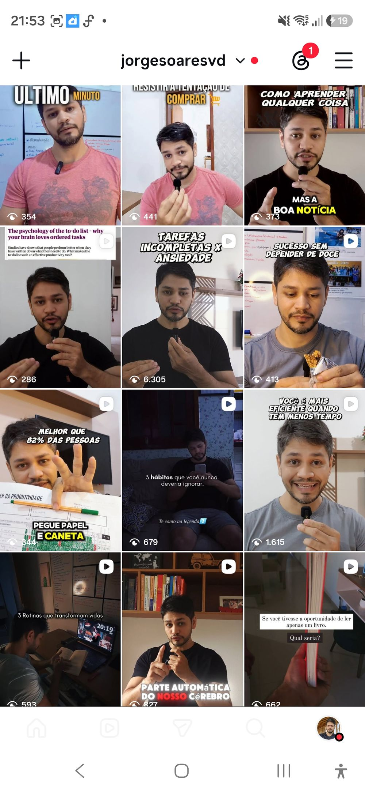
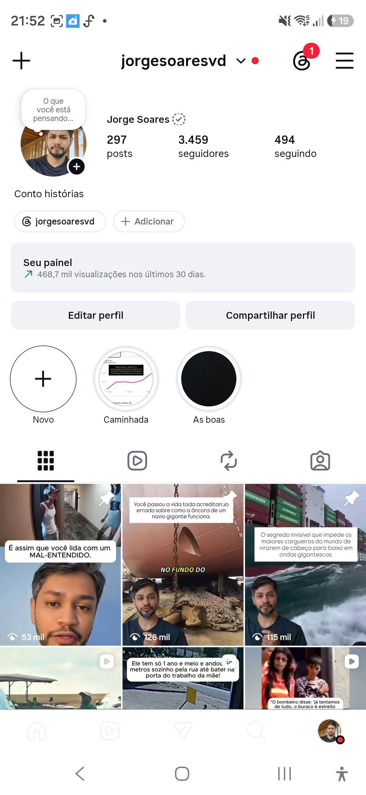
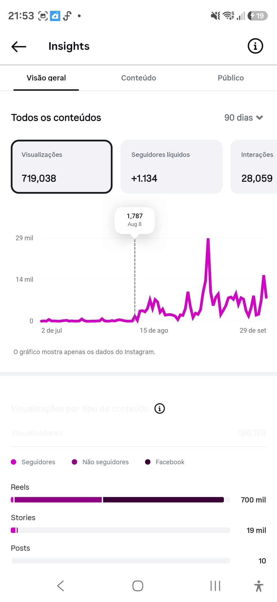
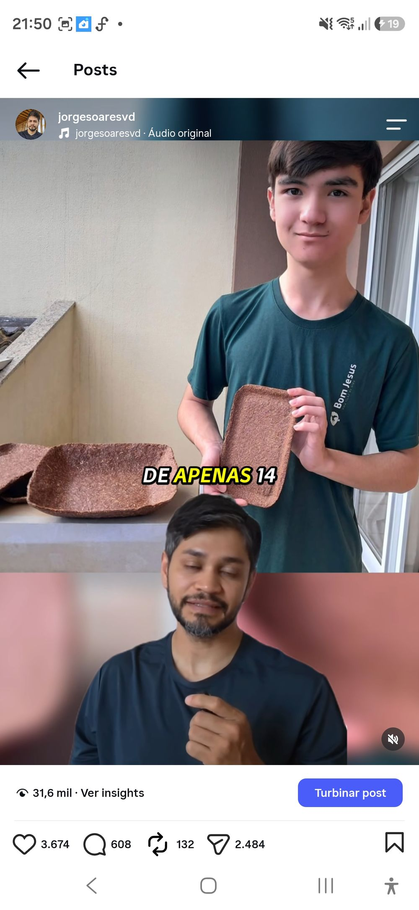
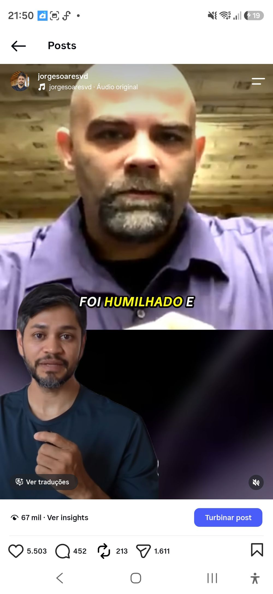
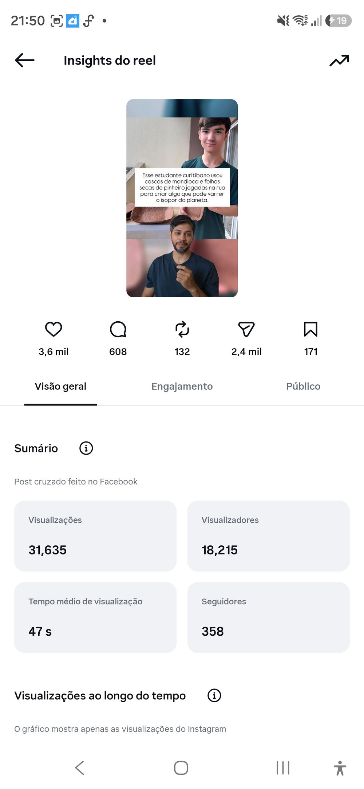
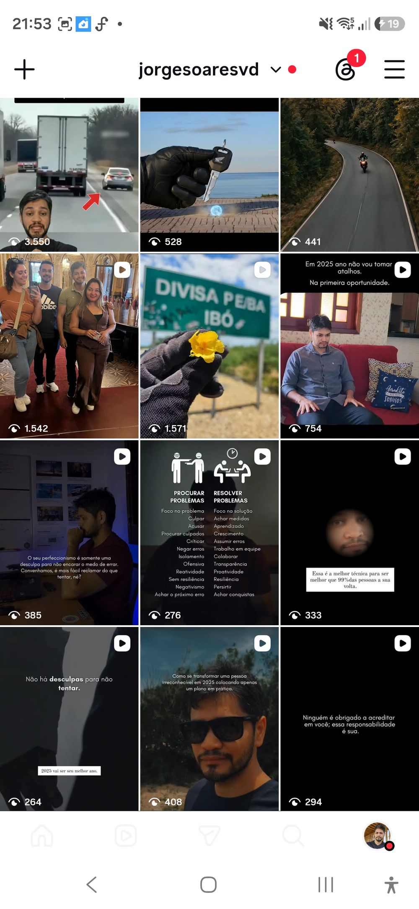

Ele é um clone digital ultra-realista criado com inteligência artificial com voz e rosto perfeitos. Dê o play com o som ligado e veja a perfeição dos lábios e da voz:
Estes são os números reais extraídos diretamente do painel profissional do Instagram e Meta. Sem montagens, sem métricas falsas:
Perder horas montando tripé, iluminação e gravando o mesmo take 30 vezes porque a fala travou. O resultado? Pouco alcance e a sensação de esforço jogado no lixo:

Vídeos novos todos os dias no piloto automático, 30 conteúdos prontos em poucas horas e explosão orgânica de alcance para não-seguidores:


A linha do tempo não mente: Até o início de agosto, o engajamento era praticamente nulo. No momento em que passei a usar o clone de IA e publicar no ritmo certo com a estratégia de validação, a curva de crescimento disparou.
Confira o engajamento e as métricas de vídeos produzidos 100% com o clone de IA:

Milhares de visualizações e comentários atraindo público qualificado.

Entrega contínua para não-seguidores através do algoritmo de recomendação.

Tempo de exibição alto, compartilhamentos e salvamentos comprovados.
Um método passo a passo gravado passo a passo na tela do computador, direto ao ponto e sem enrolação teórica:
Você aprende a escolher a foto matriz perfeita com foto comum, clonar sua voz neural com entonação e respiração idêntica no MiniMax e animar os lábios com sincronia perfeita para criar vídeos realistas.
O prompt mestre definitivo para ChatGPT, Gemini e Claude gerarem 30 roteiros magnéticos com números por extenso e pausas de respiração ajustadas para a voz neural.
Os melhores inícios testados do mercado para travar o polegar nos 3 primeiros segundos, quebrar o scroll e disparar a retenção dos seus vídeos.
A estratégia secreta de postagem sem aparecer na grade para testar ganchos e publicar no feed principal apenas o vídeo campeão de visualizações.
Como cortar silêncios em 1 clique, aplicar zoom dinâmico e gerar legendas automáticas coloridas e animadas em menos de 5 minutos por vídeo.

Depois de passar meses tentando manter uma rotina cansativa de gravações manuais, errando takes e perdendo horas em frente à câmera sem conseguir constância, decidi testar a fundo as melhores ferramentas de Inteligência Artificial do mundo.
Filtrei tudo o que é enrolação e criei o Protocolo Clone de IA: um caminho direto, simples e acessível para qualquer pessoa criar seus próprios clones digitais falando com voz humana perfeita direto no computador (e aplicável também pelo celular).
Acesso completo ao treinamento prático + 4 Super Bônus Exclusivos + Garantia Blindada
💡 Dica: No checkout você também pode estender para Acesso Vitalício por apenas + R$ 12,00 na caixinha de oferta!
Entre no curso, assista às aulas e crie o seu primeiro avatar. Se por qualquer motivo você não gostar da metodologia, achar difícil ou simplesmente mudar de ideia, você tem 7 dias para solicitar 100% do seu dinheiro de volta direto na Hotmart. Sem perguntas e sem burocracia.
Não! Você não precisa de computador caro ou placa de vídeo potente. Eu ensino todo o passo a passo na tela do computador/notebook comum, porque todo o processamento pesado de Inteligência Artificial roda na nuvem das ferramentas online. E se você quiser, as mesmas ferramentas também podem ser acessadas pelo navegador do seu celular!
Fica impressionantemente natural! Ensinamos o uso do MiniMax, a ferramenta de ponta em inteligência artificial de áudio com suporte completo para português do Brasil, incluindo respiração, ritmo e entonação humana real.
Não. Mostramos como aproveitar os créditos e opções gratuitas das ferramentas para criar seus primeiros clones e testar sem precisar fazer grandes investimentos.
O acesso é imediato! Assim que o pagamento (PIX ou Cartão) for aprovado pela Hotmart, você recebe um e-mail com seus dados de login para a área de membros e pode começar a assistir agora mesmo.
O seu acesso padrão é válido por 1 ano completo, com direito a todas as atualizações de aulas. No checkout você também pode escolher a opção de acesso vitalício permanente.